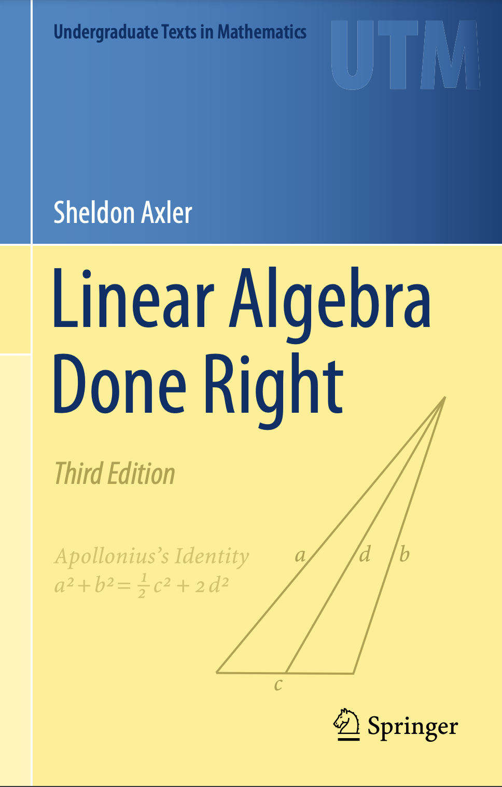
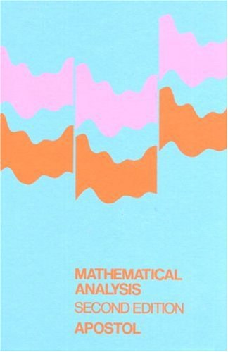

城南讲马堂
一个讲点math的地方
个人数学学习记录小站
每天进步一点，不惧真理无穷
网站纯手工自制，没有外观可言，无评论功能
记录语言英文为主，因英文写TeX更便捷，不需切换输入法，不代表本人任何政治立场
wordpress及CSDN同名博客均停止更新维护，后续仅维护本站点
阅读书目以老外教材为主，因老外教材更易于普通人学习，国内教材优秀的不多，不代表本人任何政治立场
点击书名进入详情页
指正及探讨请联系：
邮箱
christangdt@sina.com
b站
@城南唐某人
Linear Algebra Done Right
Author: Sheldon Axler
Edition: 3ed(2015)
记录内容：每章习题解答
工期：2023/01-

Mathematical Analysis
Author: Tom Apostol
Edition: 2ed(1973)
记录内容：每章主要内容整理笔记、习题解答
工期：2023/01-
